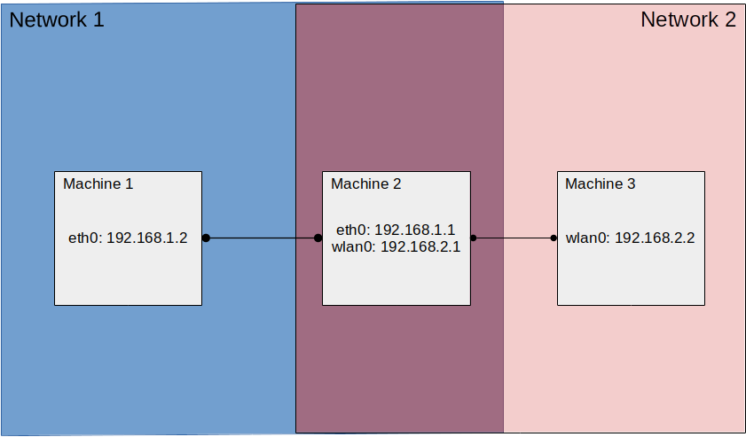

Routing
A common issue in robotics is handling communication across different network subnets. This is pariticularly relevant for frameworks such as ROS which are highly bound to a particular network domain.
To solve this, and allow for message passing between different subnets, we can make use of IP tables and network routing.
Setup
The image below provides an example of a common network topology, where two machines (Machines 1 and 3) exist on seperate networks but share an intermediary machine (Machine 3) that is on both networks.

To allow for communucation between Machine 1 and 3, we must first add some iptables rules to Machine 2 to allow it to forward messages between networks 1 and 2.
# Allow traffic to be forwarded from eth0 to wlan0
iptables -A FORWARD -i eth0 -j ACCEPT
# Allow traffic to be forwarded from wlan0 to eth0
iptables -A FORWARD -i wlan0 -j ACCEPT
iptables -t nat -A POSTROUTING -o eth0 -j MASQUERADE
iptables -t nat -A POSTROUTING -o wlan0 -j MASQUERADE
Next, we must add a routing rule on Machine 1
sudo route add -net 192.168.2.0 netmask 255.255.255.0 gw 192.168.1.1 eth0
And on Machine 3
sudo route add -net 192.168.1.0 netmask 255.255.255.0 gw 192.168.2.1 wlan0
Testing
We should now be able to ping Machine 1 from Machine 3
~$ ping 192.168.1.2
PING 192.168.1.2 (192.168.1.2) 56(84) bytes of data.
64 bytes from 192.168.1.2: icmp_seq=1 ttl=63 time=2.08 ms
64 bytes from 192.168.1.2: icmp_seq=2 ttl=63 time=2.20 ms
64 bytes from 192.168.1.2: icmp_seq=3 ttl=63 time=2.30 ms
And Machine 3 from Machine 1
~$ ping 192.168.2.2
PING 192.168.2.2 (192.168.2.2) 56(84) bytes of data.
64 bytes from 192.168.2.2: icmp_seq=1 ttl=63 time=3.00 ms
64 bytes from 192.168.2.2: icmp_seq=2 ttl=63 time=2.48 ms
64 bytes from 192.168.2.2: icmp_seq=3 ttl=63 time=3.04 ms